Tela Botanica - données botaniques libres
Découverte sur le terrain du parcours de la donnée botanique
Adeline MOREAU & Jean-Pascal MILCENT
adeline@tela-botanica.org
-
jpm@tela-botanica.org
www.tela-botanica.org
TELA BOTANICA
Le réseau de la botanique francophone
Tela Botanica
Une association internationale
pour le réseau de la botanique
Une association internationale
pour le réseau de la botanique
Objectifs
Grâce à
Mettre en réseau les citoyens autour de projets floristiques
Faire de la botanique un bien commun participatif
Sensibiliser et former sur le monde des plantes
Partenaires
Instituts de recherche
Collectivités
Bureaux d'études et associations
Instituts de recherche
Collectivités
Bureaux d'études et associations
Financements
Fondations
Fonds publics
Dons
Fondations
Fonds publics
Dons
Équipe
15 salariés
15 salariés
Mettre en réseau les
citoyens autour de
projets floristiques
citoyens autour de
projets floristiques
Monter et accompagner vos projets botaniques
Un annuaire en ligne des Telabotanistes
Une lettre d'actualités hebdomadaire sur la botanique
23 000
telabotanistes dans le monde entier
Scientifiques
Botanistes
Amateurs passionnés
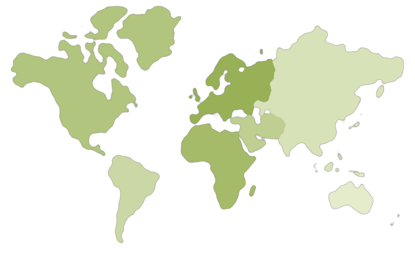
Botanistes
Amateurs passionnés
Faire de la botanique
un bien commun
participatif
un bien commun
participatif
Des bases de données libres, FloraData et Catminat
Carnet de terrain numérique, Carnet en Ligne
Identifier ses plantes à l'aide du réseau Tela Botanica, IdentiPlante
Une encyclopédie collaborative illustrée de la flore, eFlore et des végétations, eVeg
Enregistrer et diffuser le contenu de vos collections d'herbiers, Collections en Ligne
Sensibiliser et
former sur le
monde des plantes
former sur le
monde des plantes
Impliquer les citoyens dans la connaissance de la nature, Sciences Participatives
Cours de botanique et sorties de terrain pour professionnels et particuliers, Formations
Une mallette pédagogique pour construire des ateliers autour de la botanique, Pousse
Collecte
Relevés de terrain (observations, images) & identification
 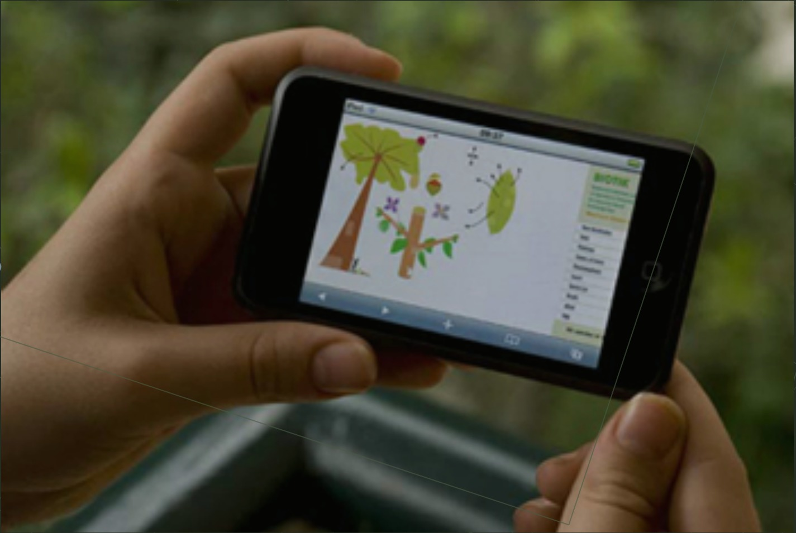
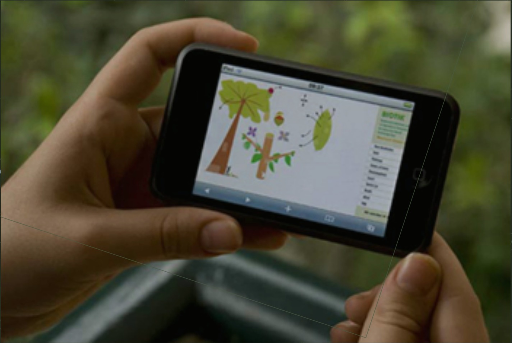
Saisie
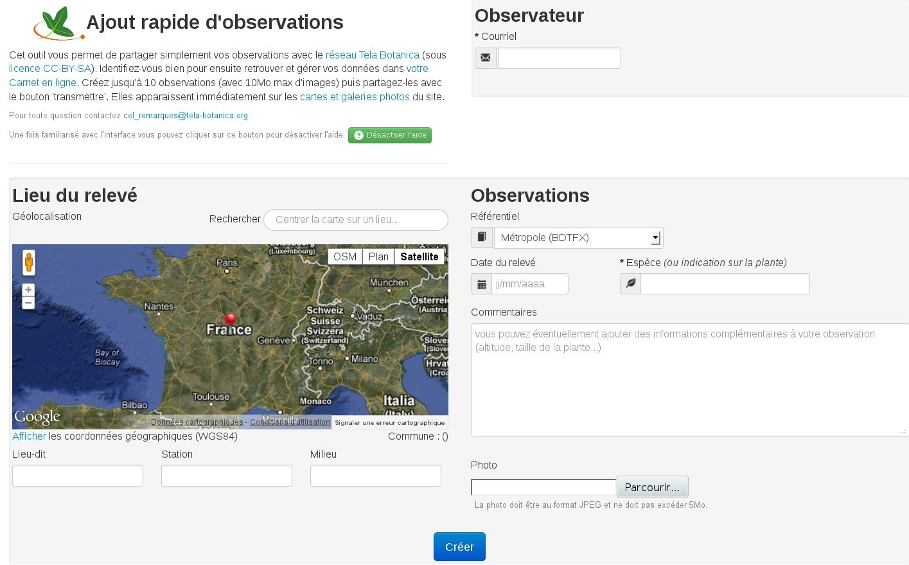
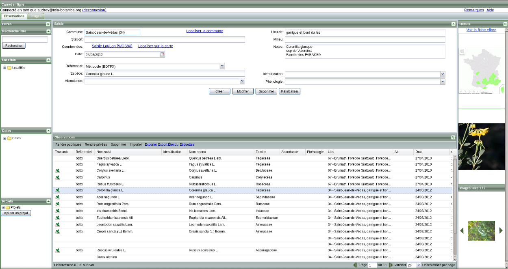
Nommer, géolocaliser,
illustrer son observation de terrain
⇨ I. Intérêt personnel fort, puis...
Partage (CC BY SA)
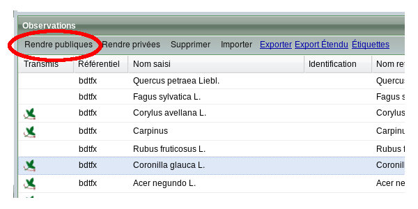Partage avec le collectif
⇨ II. Premier pas vers la coopération : apporter sa pierre à l'édifice
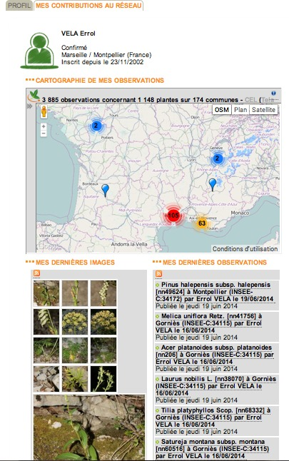
⇨ III. Se connaître, échanger...
Visualisation
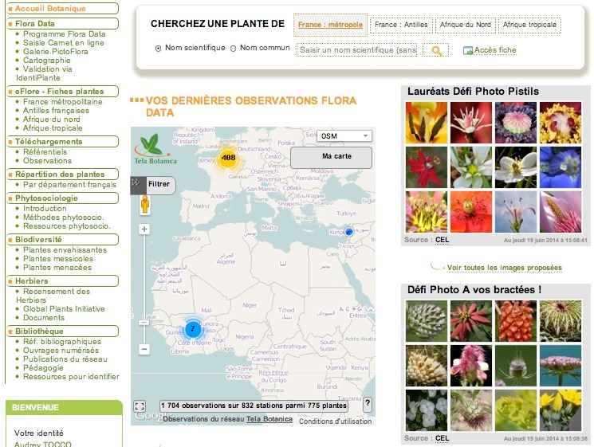 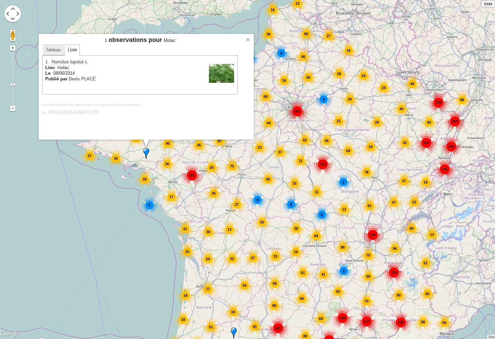
Diffusion de la connaissance
Œuvre collective
420 000 données partagées
189 000 images
Œuvre collective
420 000 données partagées
189 000 images
⇨ IV. Valoriser ses connaissances pour soi et pour les autres
Validation
permanente, collective, a posteriori
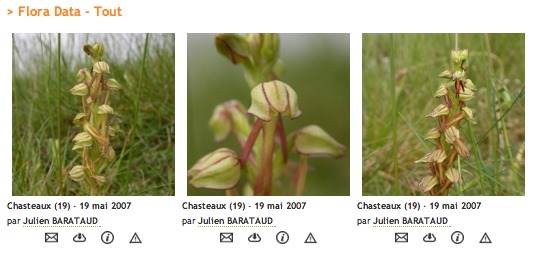
Obtenir et voir instantanément les réactions sur l'information transmise
Identiplante / Pictoflora
rechercher des images, identifier une plante
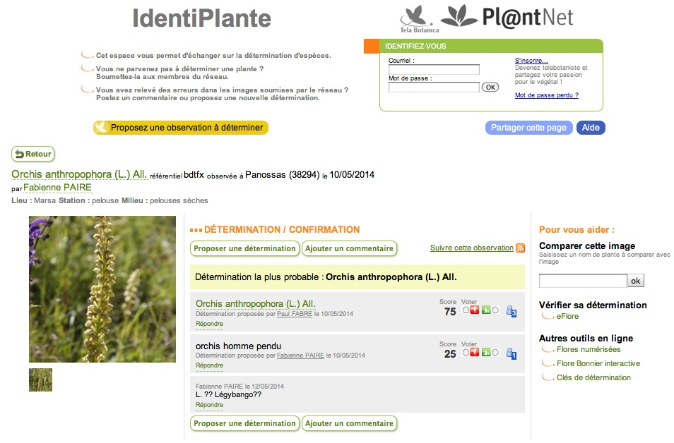Technologies utilisées
- HTML 5 + CSS3
- Bootstrap 2 & 3 + jQuery
- PHP 5.4 & 5.5 (Webservices & Applications Web)
- MySQL 5.6
- GWT 2.5 (Applications Web historiques)
- Dart (en test)
Licence des données TB
- Creative Commons BY SA v2.0
Sources de données
- OpenStreetMap : contours de zones géographiques
- OpenStreetMap + OsmFr : fonds de cartes